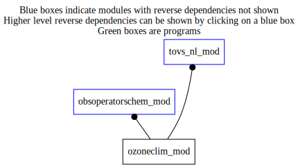

Dependency Diagrams:
Direct Dependency Diagram¶
 Reverse Dependency Diagram¶
Description
MODULE ozoneClim_mod (prefix=’ozo’ category=’5. Observation operators’)
- Purpose
Climatological ozone (1998)
Quick access
- Routines
Needed modules
obsspacedata_mod: MODULE obsSpaceData_mod (prefix=’obs’ category=’6. High-level data objects’)
presprofileoperators_mod: MODULE presProfileOperators_mod (prefix=’ppo’ category=’8. Low-level utilities and constants’)
utilities_mod: MODULE utilities_mod (prefix=’utl’ category=’8. Low-level utilities and constants’)Variables
Subroutines and functions
- subroutine ozoneclim_mod/ozo_get_profile(o3p, zlat, plev, nlev, nprf)¶
- Purpose
Get ozone profile from climatology interpolated to desired P levels
- Arguments
o3p (nlev,nprf) [real ,out] :: OZONE PROFILES (PPMV)
zlat (nprf) [real ,in] :: ARRAY OF LATITUDE (-90S TO 90N)
plev (nlev,nprf) [real ,in] :: PRESSURE LEVELS (HPA)
nlev [integer ,in,] :: NUMBER OF VERTICAL LEVELS
nprf [integer ,in,] :: NUMBER OF PROFILES
- Called from
- Call to
- subroutine ozoneclim_mod/ozo_read_climatology(datestamp[, nlat_opt[, nlev_opt[, press_opt[, ozone_opt]]]])¶
- Purpose
READ OZONE CLIMATOLOGICAL FIELDS
- Arguments
datestamp [integer ] :: Datestamp
- Options
nlat_opt [integer ,out,] :: Number of latitudes
nlev_opt [integer ,out,] :: Number of vertical levels
press_opt (*) [real ,out,allocatable] :: Pressure levels
ozone_opt (*,*) [real ,out,allocatable] :: Ozone field
- Called from
- Call to
{kind=link}
{kind=link}